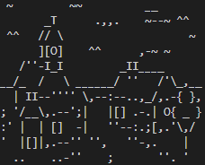

Documentação CDPC
Documentação Chefe de Pouca Coisa
Breves instruções de como funciona cada coisa e registros do próprio para caso alguém se interesse sobre como o jogo funciona ou eu precise me lembrar de como ele funciona (Melhor ter, do que não ter e eu precisar…)
Progressão da Cidade:
-
Vila ( 3000 Hab. 0 Melhorias )
-
Cidade ( 10000 Hab. 5 Melhorias )

Lista de Informações:
A lista é organizada de forma predefinida, seguindo o padrão abaixo:
📎
{Dinheiro}, {Felicidade}, {Quantidade de Melhorias}, {Taxa de Desemprego}, {Quantidade de Habitantes}, {Lucro Mensal}, {Meses no Poder}, {NÃvel da cidade}, {Nome da Cidade}, {Nome do Jogador}, {Melhoria 1}, {Melhoria 2}, … , {Melhoria N}
Contador de dinheiro:
Utiliza o padrão brasileiro, a vÃrgula para os decimais e o ponto para o milhar.
📎
R$ 2.600,26 (Dois mil e seiscentos reais e vinte e seis centavos).
Sistema de Crescimento Populacional:
Sendo “a†um número aleatório entre 1 e 200, “f†o quão feliz a cidade está e “m†a quantidade de melhorias feitas
Utilizando essa formula é calculado o crescimento populacional da cidade, a constate é para caso algo no calculo dê zero. Assim a cidade nunca ficará sem crescimento, deixando o jogo um pouco mais rápido (Não é muito, mas é trabalho honesto).
Sistema de Taxa de Desemprego:
Por ser uma taxa meramente ilustrativa e não ter nenhuma interferência na gameplay em sim, é calculada aleatoriamente, porém com algumas precauções.
Sendo “a†e “b†números aleatórios e “d†a taxa de desemprego do mês anterior:
Porém os valores de “a†e “b†variam de acordo com o crescimento populacional, caso o crescimento populacional seja maior que 300 ambos podem variar de 1 a 6, quando for menor ou igual a 100, a varia de 1 a 3 e b varia de 1 a 4. Como dito acima, por ser um número ilustrativo uma precaução caso ele ficasse muito irreal foi tomada, se a taxa de desemprego nova for maior que 20, a fórmula fica assim:
Sistema de Felicidade dos Habitantes:
Cada melhoria e polÃtica de governo tem uma mudança predefinida na felicidade dos habitantes, as vezes nem tudo o que dá dinheiro traz felicidade.
A “carinha”, que complementa esse dado tem funcionamento simples:
📎
Felicidade menor que 35: :(
Felicidade entre 35 e 70: :/
Felicidade maior que 70: :)
Sistema de Eventos Aleatórios:
Ao passar o mês, um desses eventos pode acontecer. Influenciando ou não a gameplay.
-
Promoções pela cidade (20% de chance de acontecer a cada mês, aumenta a felicidade em 5).

-
Doação de um admirador (10% de chance de acontecer a cada mês, adiciona 15 mil reais ao dinheiro do jogador).